Getting Started
This tutorial will walk you through using MASCGEN to create a mask configuration, as well as manipulating and saving the configuration and its associated data products. The mask we will create for this tutorial will use the sample data provided by Charles Steidel (CIT) for a field called Q1700, included with the MAGMA package.
- Familiarize yourself with the GUI layout.
- In the MASCGEN panel, specify the name of your new mask by replacing the text default in the Mask Name field. We'll call it q1700_tutorial.
- Hit the Select Target List button in the MASCGEN panel. Browse to and select the file q1700_coords.txt included with the MAGMA distribution package. It is likely in the same directory you are currently in. Hit Open.
- Leave the rest of the default values in MASCGEN. The MASCGEN panel should look like this:
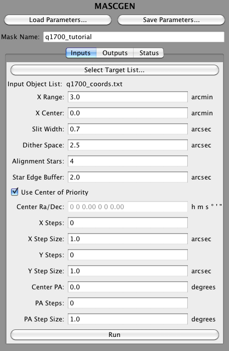
- Hit the Run button at the bottom of the MASCGEN Inputs panel. The MASCGEN panel will automatically switch to the Status tab, and results for the configuration are displayed. Since the default MASCGEN inputs do not dither, only one run is performed. With the target list provided, a mask will be created and the configuration is displayed. A graphical depiction of the slit mask is displayed in the Mask Visualization Panel. The mask pointing information is displayed in the Configuration Name and Pointing Panel and a list of the slit center positions and slit widths (both in arcseconds) is displayed in the Slit Table. A list of the targets in the mask is shown in the Target List Table. The Target List Table is sortable by clicking on Priority, Magnitude, RA, etc... The mask configuration is also added to the Mask Configurations Panel. Note the priority for this mask is 5700.
Rows start at the top with row 1 and end at row 46 at the bottom of the mask. As you move your cursor around the Mask Visualization Panel, you will see the row number update on the upper left next to 'Row:'. The 'X:' value represents the distance from the center of the CSU in arcseconds. The slits are drawn in black, and have their target name labeled next to it. The colored dots represent the position of each object in the slit. To remove the colored dots click 'None' next to Plot Targets. To see where all the objects in your target list are located, including those not on the mask, click 'All'. The colors represent the priority assigned to each object. Blue to red represents low to high priority, respectively. The color scale and dot size can be changed by clicking 'Options'. If you place your cursor over one of the dots, the object name will appear next to 'Target:' and the priority will appear next to 'Priority:'. The alignment stars locations are drawn by orange boxes, and the stars name is labeled to the right. The red box designates where slits are allowed to be placed, based on the X Center and X Range input arguments. We'll play with these arguments later. The grey circle indicates the MOSFIRE field of view.
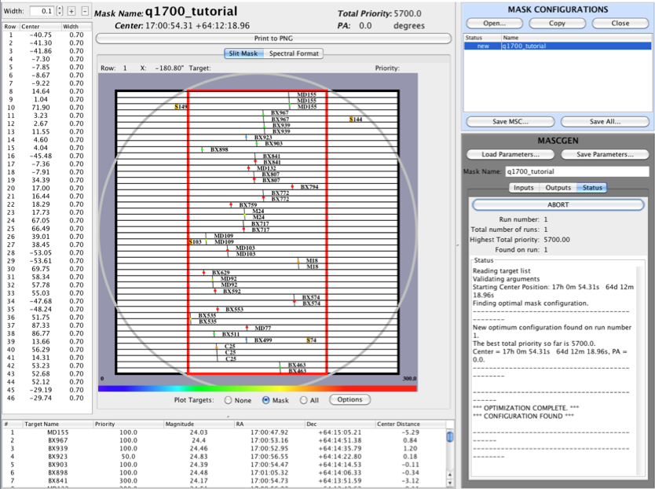
- Now let's try dithering. Switch back to the Input tab on the MASCGEN panel, and change the Mask Name to q1700_tutorial_dither. Set X Steps, Y Steps, and PA Steps to 10, and set X Step Size and Y Step Size to 4, and PA Step Size to 2.
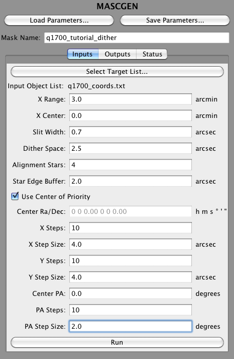
- Run MASCGEN again. You will get a mask like the following. Notice the increased priority, now at 6800. You will also notice that it will take more time to find the optimized configuration. The more dither space you explore, the longer it will take to complete your mask configration.
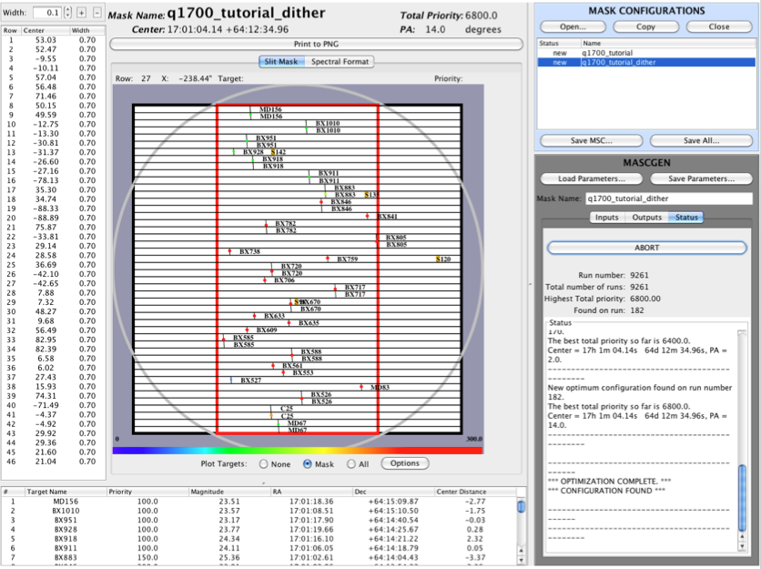
- Switch to the spectral view by clicking on the Spectral Format tab at the top of the Mask Visualization Panel. You will see the layout of the spectra on the detector. The blue square in the background represents the detector. The numbers on the each side of the drawing show the limiting wavelength for each slit, either defined by the filter cutoff, or the edge of the detector. The object for each slit is listed in the middle of each spectrum. You can change filters by selecting the desired filter in the dropdown menu at the top of the panel.
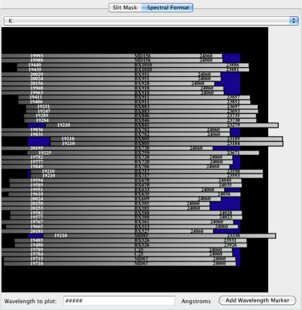
- Now suppose you are particularly intersted in a line that falls at 20000 Angstroms. Change to the K-band filter in the dropdown menu at the top of the Mask Visualization Panel. You will notice by eye that for some of the objects, this wavelength falls off of the edge of the detector. You can visualize this better by plotting the line directly on this panel. Erase the ##### in the box that says 'Wavelength to plot:' at the bottom of the panel, and then enter 20000. Hit the Add Wavelength Marker button and lines will be drawn on the display representing the location of the line at 20000 Angstroms. If the line falls on the detector, the line is colored green. If it falls off of the detector, it is colored red.
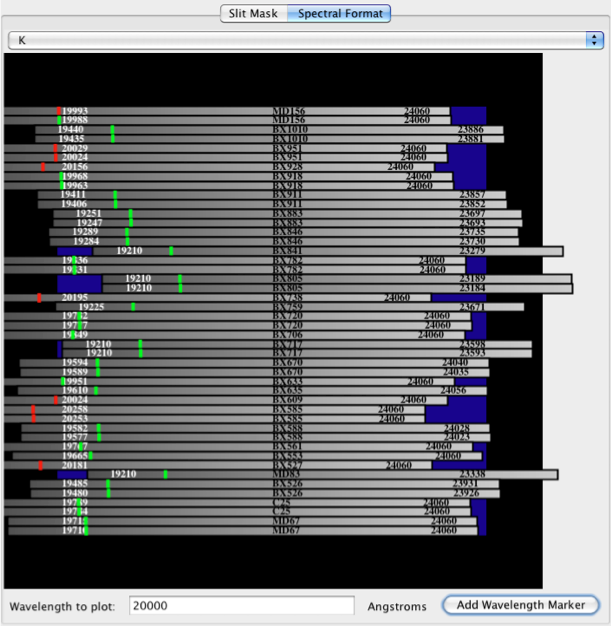
- Suppose it is important that you get this line on the detector for all fo your objects. There are a few ways you can manipulate the MASCGEN Inputs to achieve this. The first way is to shift the entire range of where slits are allowed to be, which can be accomplished by adjusting the X Center input. Try setting this to -1. Click 'Run' again. If you do not change the mask name, running MASCGEN will replace the last configuration you made with the new one. You will be prompted to confirm that this is okay. This can be turned off either by checking the box at the bottom of the confirmation dialog, or by changing that option in the Options dialog under the Tools menu item. After running MASCGEN, you will see a mask that looks like the following. You may have to click on Slit Mask tab on the top of the Mask Visualization Panel. Notice the red box has been shifted to the right by 1 arcminute. You will also notice that your mask is populated with mostly different objects and has a slightly lower priority of 6750.
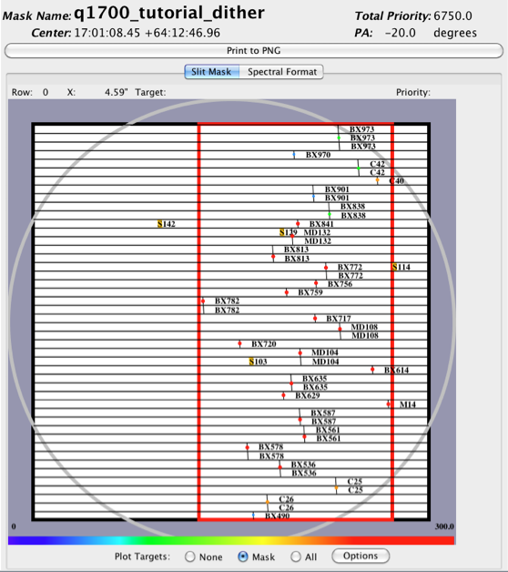
- Click on the Spectral Format view. All spectra have been shifted to the right as well, and now you can see fewer of them are cut off by the detector on the blue side. The value 20000 should still be in the Wavelength to Plot box (if not, enter it). Click on the Add Wavelength Marker button to redraw the lines. Now all of the lines are green, meaning that that wavelength will be measured for all spectra in the mask.
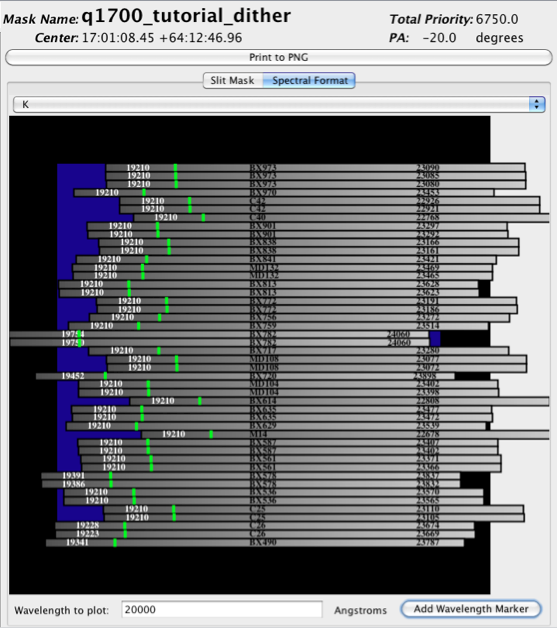
- You may now notice that since the spectra are shifted to the right, the longer wavelengths for several objects fall off the detector. Suppose you want spectral coverange out to these longer wavelengths, but you still want to make sure you get 20000 Angstroms. To achieve this, return the X Center to the middle, but reduce the width of the allowable slit area. Change X Center back to 0, and set X Range to 1. Run MASCGEN again. You will now see in the Slit Mask view that the red box is centered, but much smaller in size, reduced to 1 arcminute in width.
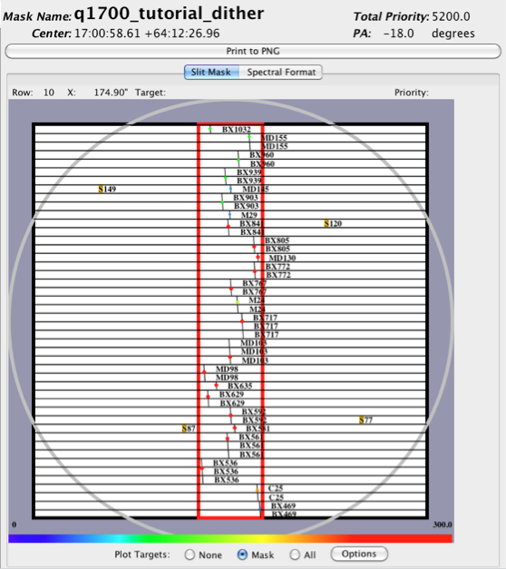
- Switching to spectral view, you will see that the 20000 Angstrom line is on all of the slits, but also that you get approximate full coverage to the long wavelengths on nearly all slits. However, notice the priority score has been reduced to 5200. Since the range is smaller, you have less room to place slits and therefore less flexibility in choosing which objects make it into the mask.
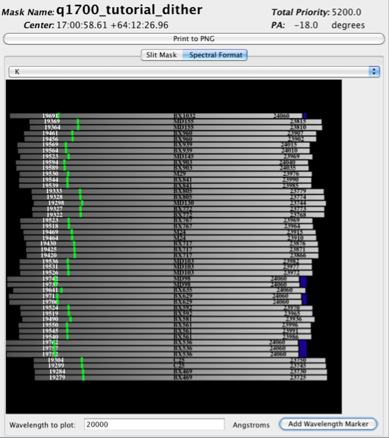
- Now we will save the configuration to disk. This is quite simple. Click on the mask you wish to save in the Mask Configurations Panel. To save just the MSC file, click on 'Save MSC...', choose a directory and enter a filename, and then click Save. If you wish to save all of the data products associated with the mask, click 'Save All...' and a dialog will be presented where you can change some options about how the data products will be named and where they will be written. The data products are described in the Data Products page. By default, MAGMA will automatically name your files, and collect them in a subdirectory with the same name as the mask. This directory will be created for you if it does not already exist. Modify the output directory and product filenames if you desire, and then hit the OK button to save.
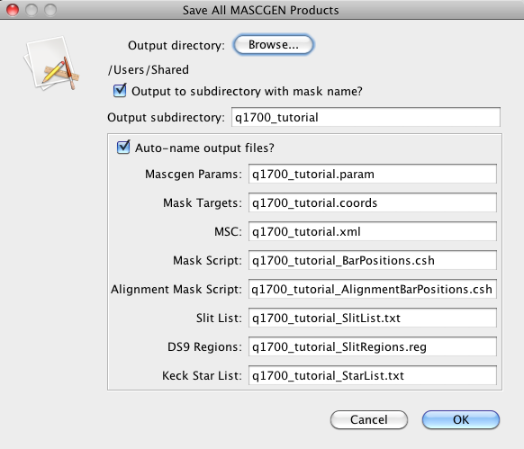
- You are encouraged to examine the data products. To see your mask configuration overlayed on a FITS image, open the included file q1700Rs.fits in DS9, and then select Load Regions from the Regions menu option. Browse to the regions file you created, which will have a
.reg extension and will be named q1700_tutorial_dither_SlitRegions.reg (unless you changed it), and hit Open. Then accept the defaults on the Load Regions dialog (Load into Current Frame) and hit OK. The mask will now be overlayed on the image. You may have to adjust the zoom and pan to see things clearly.